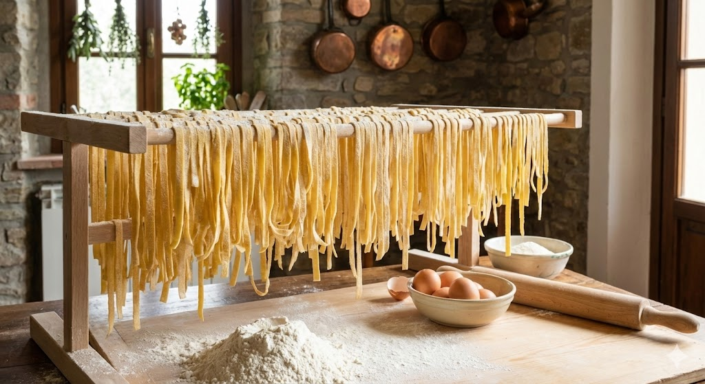

Pasta & Nudeln: Die Welt der Formen
Ob italienische "Pasta" (Teigpaste) oder asiatische "Noodles" – das Prinzip ist gleich: Getreide + Flüssigkeit + Formgebung. Doch die Form ist niemals Zufall. Sie bestimmt, wie die Soße haftet und wie das Mundgefühl ist.
1. Italien: Ei oder Hartweizen?
In Italien teilt sich das Land kulinarisch am "Rubikon der Eier".
Pasta Secca (Süden)
Nur Hartweizengrieß (Semola) und Wasser. Kein Ei. Der Teig ist extrem hart und wird durch Bronze-Matrizen gepresst ("al bronzo"). Das macht die Oberfläche rau, damit Soße haftet.
Beispiel: Spaghetti, Penne.
Pasta Fresca (Norden)
Weichweizenmehl und viele Eier. Der Teig ist elastisch und goldgelb. Er wird meist ausgerollt und geschnitten, nicht gepresst.
Beispiel: Tagliatelle, Tortellini.
2. Asien: Die Chemie des Bisses
Asiatische Nudeln haben oft eine ganz andere Textur ("Chewy" oder "Q-Texture").
Das Geheimnis: Kansui (Alkali)
Ramen-Nudeln sind gelb, obwohl oft kein Ei drin ist. Der Grund ist alkalisches Wasser (Kansui). Der hohe pH-Wert verändert das Gluten im Weizen: Die Nudeln werden extrem elastisch, bissfest und bekommen ihre gelbliche Farbe. Ohne Alkali wären es einfach Spaghetti.
3. Pasta Lunga (Lang)
4. Pasta Corta (Kurz & Hohle)
Die "Soßenfänger". Je dicker und stückiger die Soße (Ragù), desto größer sollte der Hohlraum sein.